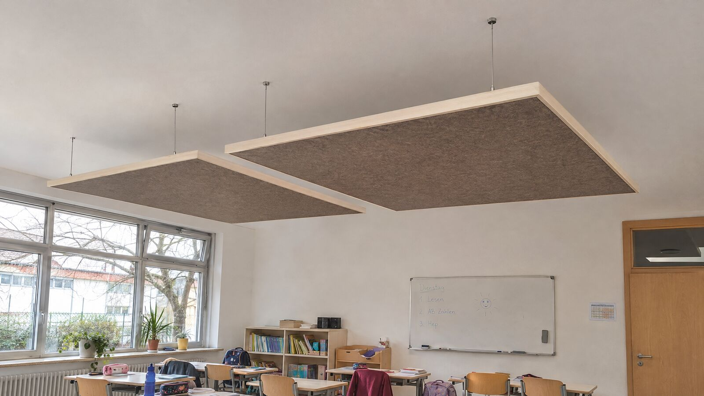
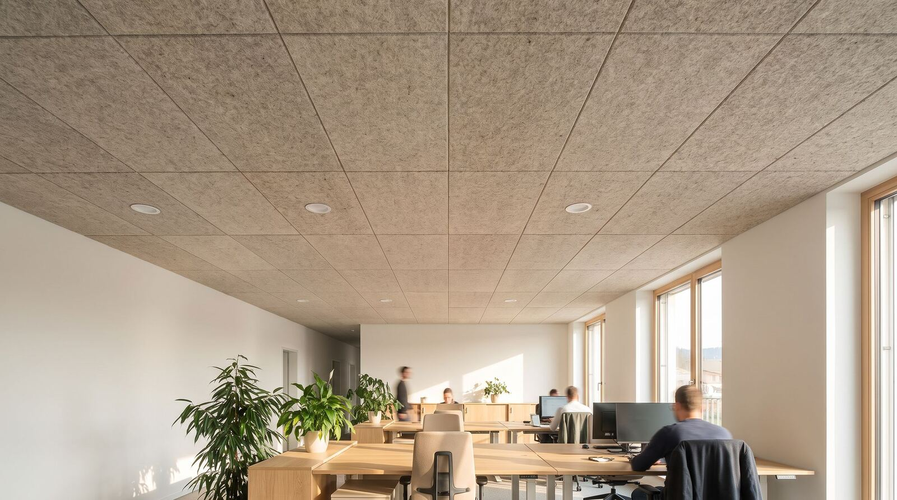

Raumakustik
Wie klingt Ihr Raum?
Die Nachhallzeit sagt, wie lange ein Ton im Raum nachklingt. Ist sie zu lang, wird es laut und anstrengend. Berechnen Sie hier, wie viel Natur Schallabsorber Ihr Raum braucht.

Rechner
Nachhallzeit berechnen
Näherung nach Sabine für mittlere Frequenzen (500 bis 1000 Hz). Für die verbindliche Planung besprechen wir die Situation gerne mit Ihnen.
–
Ergebnis besprechenIhre Raumdaten und das Ergebnis stehen dann schon in der Anfrage.
Die Berechnung ist eine Näherung und ersetzt keine raumakustische Planung. Rechenwerte der Produkte: Absorptionsgrade nach Prospekt F2026, Näherung ohne Randeffekte.
Grundlagen
Was die Nachhallzeit bedeutet
Die Nachhallzeit ist die Zeit, bis ein Ton im Raum um 60 dB leiser geworden und damit praktisch verklungen ist. In einem leeren Raum mit Beton und Glas sind das oft 1,5 Sekunden und mehr.
In so einem Raum überlagern sich Silben. Man versteht schlechter, spricht lauter, und alle anderen auch. Absorber verkürzen die Nachhallzeit. Für Besprechungsräume und Klassen empfiehlt die DIN 18041 Werte um 0,5 bis 0,6 Sekunden.
Besichtigung anfragenBesichtigung
Wir sehen uns Ihren Raum an
Bei einer Besichtigung nehmen wir die Ist-Situation auf und besprechen mit Ihnen, was akustisch, baulich und optisch für Ihren Raum in Frage kommt. Messungen sind bei großen Hallen und Großraumbüros oder auf Anfrage möglich.
Besichtigung anfragen